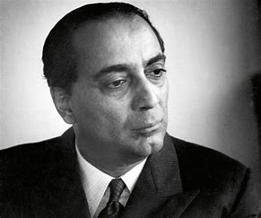

Dr.Homi Jehangir Bhabha
30 October 1909 – 24 January 1966
Father of the Indian Nuclear Programme
Homi Jehangir Bhabha was an Indian nuclear physicist who is widely credited as the "father of the
Indian nuclear programme". He was the founding director and professor of physics at the Tata Institute of
Fundamental Research (TIFR), as well as the founding director of the Atomic Energy Establishment, Trombay
(AEET) which was renamed the Bhabha Atomic Research Centre in his honour. TIFR and AEET served as the
cornerstone of the Indian nuclear energy and weapons programme. He was the first chairman of the Indian Atomic
Energy Commission and secretary of the Department of Atomic Energy. By supporting space science projects which
initially derived their funding from the AEC, he played an important role in the birth of the Indian space
programme.
He was awarded the Adams Prize (1942) and Padma Bhushan (1954), and nominated for the Nobel Prize for Physics
in 1951 and 1953–1956.
He died in the crash of Air India Flight 101 in 1966, at the age of 56.
Homi Bhabha Career
When the war broke in Europe, Bhabha was in India and decided to not return to England for the time being.
He started his career with the Indian Institute of Sciences, Bangalore, as a Reader in Physics on the behest
of Nobel laureate CV Raman who at that time headed the Physics department in the institute.
Two years later in 1942, Bhabha was elected as a member of the Royal Society and was later elected a Fellow of
the Indian Academy of Sciences. In 1943, he was appointed as the President of the Physics section of the
Indian Science Congress.
He convinced many senior leaders of the Congress Party to start an ambitious nuclear programme. As part of his
vision, he first established the Cosmic Ray Research Unit at the Institute and later the Tata Institute of
Fundamental Research (TIFR) in Bombay in 1945 with financial help from JRD Tata.
In 1948, he set up the Atomic Energy Commission and served as its first Chairperson. The same year, he was
appointed by Jawaharlal Nehru as the director of the nuclear program and was tasked to develop nuclear
weapons.
In 1950, he represented India in IAEA conferences and served as President of the United Nations Conference on
the Peaceful Uses of Atomic Energy in Geneva, Switzerland in 1955.
From 1960 to 1963, he served as the President of the International Union of Pure and Applied Physics.
Homi Bhabha Awards
Homi Bhabha received the Adams Prize from the University of Cambridge in 1942, Padma Bhushan by the
Government of India in 1954, and was also nominated for the Nobel Prize for Physics in 1951 and 1953–1956.
Homi Bhabha Death
Homi Bhabha died on 24 January 1966 in an aeroplane crash. He was aboard Air India Flight 101 which
crashed near Mont Blanc. Post his death, many assassination theories surfaced.
Homi Bhabha Legacy
After his death in 1966, the Atomic Energy Establishment in Mumbai was renamed the Bhabha Atomic Research
Centre in his honour.
A radio telescope in India's Ooty was his initiative which became a reality in 1970.
Homi Bhabha National Institute, an Indian deemed university, and the Homi Bhabha Centre for Science
Education in Mumbai are the noted institutions in his name.